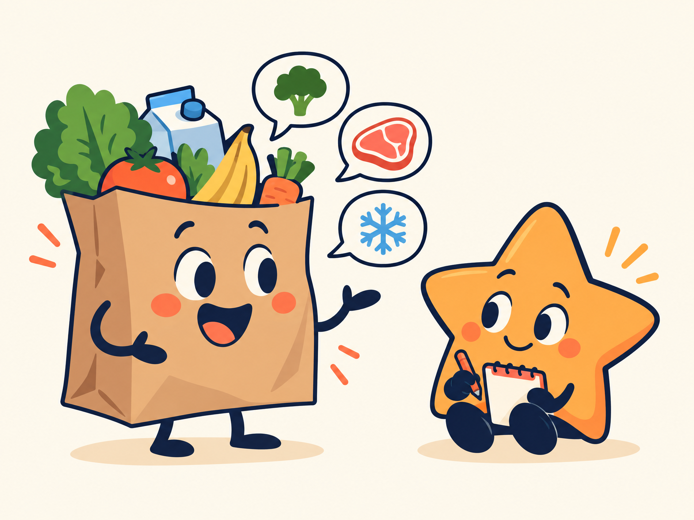
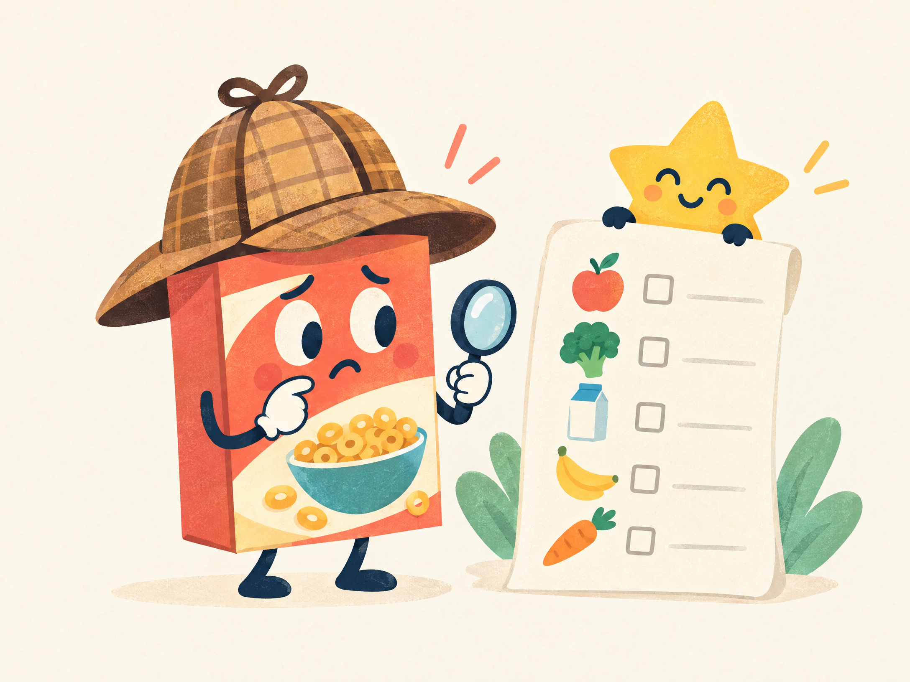
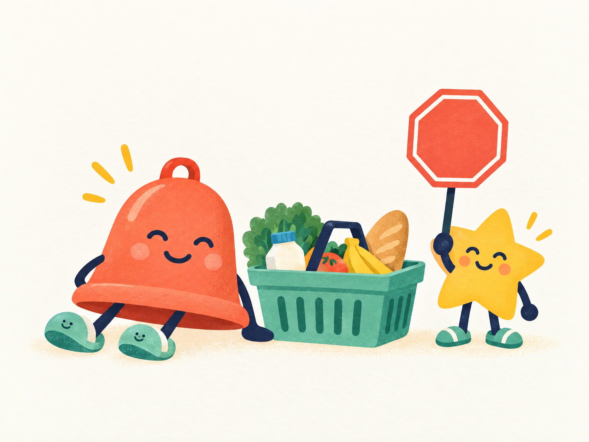

Tell Muse
Share what you bought or what you plan to buy, including a brand, date, store, or lot when you know it.
A tiny calm in the grocery aisle
Tell Muse what you bought, what you are buying, and the brands you regularly purchase. Muse checks official FDA and USDA notices against your personal list—not a giant panic feed.

NOThe simple version
No barcode scanner. No pantry archaeology. No generic recall dump.
Share what you bought or what you plan to buy, including a brand, date, store, or lot when you know it.
Muse remembers your last recorded purchases and the regular brands you explicitly choose to keep.
A match includes the reason, what to do, and the official notice. No match means Muse stays quiet.
Muse checks your list so your brain can stop running a tiny supermarket spreadsheet.

FDA openFDA Food Enforcement and USDA FSIS notices only. A useful nudge, not a regulator costume.
Muse helps turn “was that my box?” into a calm, personal check.

Get a focused nudge for your list instead of a full internet panic parade.
